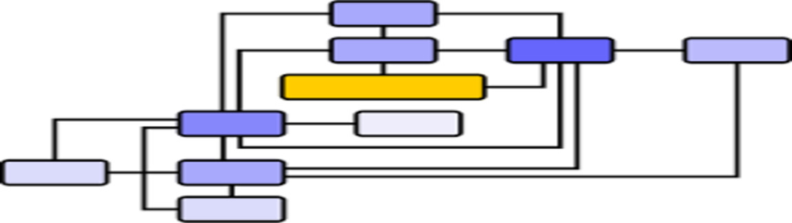

Control Theory and Sustainability
Photo Credit: Vector image of flow diagram in color Openclipart
One of the major topics in electrical engineering is control theory, which is the control of dynamic systems in engineered systems. I think control theory is really interesting in the way that it approaches and systematically breaks down a problem or an action into a contained system. Sustainability, while a huge topic, can also be thought of as a control system! A paper by Dr. Leanne Johnstone published in the Journal of Management Control in 2019 volume highlights this concept:
Abstract: This conceptual paper explores the iterative relationship between system design and use for the development process of sustainability control systems (SCS). Building upon Adler and Borys’ seminal framework (Adm Sci Q 41(4):61–89, 1996) as an analytical tool, it suggests that SCS are characteristically distinct, and more research into the dual role of control (i.e. control over based on system design and control in situ based on system use by the individual user) is necessary for future theorisations of the SCS. It poses that for sustainable futures that extend beyond organisational boundaries, more attention is required on individual general employees in management accounting and control frameworks as instrumental for performance outcomes. To this end, individual values, borne from the extra-organisational context, are considered important alongside organisational ones for the development of SCS. Thus, the paper bridges perspectives on system characteristics, the individual and performance outcomes by offering a theoretical framework for future research. It also extends studies on accounting as a social practice by emphasising the extra-organisational factors that influence internal accounting systems. Finally, it expounds upon the notion of social control as an individual-level phenomenon, necessary for sustainability. This expanded theoretical perspective also has implications for practice by encouraging managers to think strategically about how systems are received from the perspective of the user. This can encourage more commitment to the sustainability cause from the outset, as well as over spatial and temporal boundaries.
Citation: Johnstone, L. Theorising and conceptualising the sustainability control system for effective sustainability management. J Manag Control 30, 25–64 (2019). https://doi.org/10.1007/s00187-019-00277-w